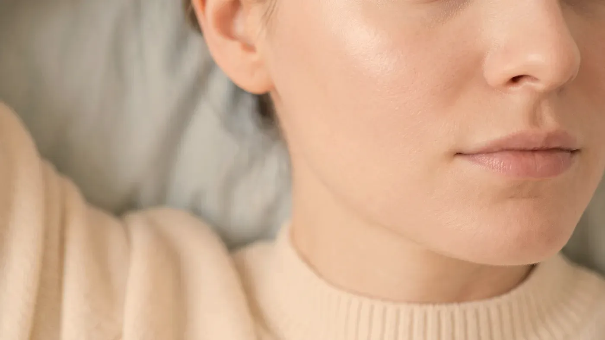
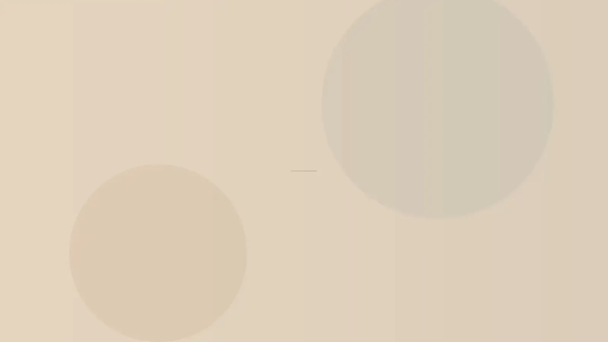

Cihaz ve Lazer · Cilt Tonu ve Leke
Pico lazerle leke: atımdan önce lekenin adı konur.
Pikosaniye lazer, derinin üst katmanlarında kümelenmiş melanin pigmentini çok kısa atımlarla hedef alır. Ancak ciltteki her koyu alan aynı kökenden gelmez ve hepsi lazere uygun değildir. Bu yüzden ilk iş, her lekeye büyütmeli ışık altında tek tek bakmaktır; adı konamayan bir lekeye atım yapılmaz.

Temsilî görsel · yapay zekâ ile üretildiTanım ve sınırlar
Pico lazer lekeye nasıl etki eder, nerede durur?
Yanaktaki kahverengi bir alan, yıllarca güneşe çıkmanın bıraktığı bir lentigo olabileceği gibi geçmiş bir sivilcenin ardından kalan koyulaşma, hormonlarla ilişkili melazma ya da seyrek de olsa kötü huylu bir lezyonun erken hâli olabilir. Aynaya bakarak bunları ayırmak mümkün değildir. Olası nedenleri cilt tonu ve leke sayfasında anlattık.
Pikosaniye atımlar melanin kümelerinde ani bir basınç etkisi yaratır ve pigmenti küçük parçalara ayırır; parçalar derinin yenilenmesi ve savunma hücreleri aracılığıyla zamanla uzaklaşır. Atım çok kısa olduğundan çevre dokunun ısınması sınırlı tutulur. Bu, iltihap sonrası koyulaşma olasılığını azaltmayı amaçlar ama ortadan kaldırmaz.
Güneşe bağlı yüzeysel lentigolar en öngörülebilir gruptur. Çiller çoğu zaman uygulama gerektirmez ve her yaz yeniden belirir; seboreik keratoz ise deri yüzeyinde kabarık bir büyümedir, pigment kümesi değildir. Sivilce sonrası koyulaşmada önce sivilcenin durması gerekir; melazma ve ayırt edilemeyen lekeler lazerden önce inceleme konusudur.
Koyu tende derinin kendi pigmenti de enerjiyi soğurduğu için istenmeyen ton değişikliği olasılığı yükselir; düşük enerjiyle ve önce küçük bir deneme alanında çalışılır, bazen uygulama hiç önerilmez. Kullanılan pikosaniye lazer, dövme silme sayfasında tanıtılan cihazdır.
Amacı cildin genel rengini açmak değildir; lazer yalnızca adı konmuş bir pigment kümesine yöneltilir, çevresindeki sağlıklı deriye değil. Lekeyi oluşturan nedeni de durdurmaz: her yaz korumasız güneşlenen, hormonal ilaç kullanmayı sürdüren ya da sivilceleri sık iltihaplanan birinde yeni lekeler çıkması beklenir. Bazı lekelerde işe yaramaz, bazılarında görünümü kötüleştirebilir.
Melazma ayrı bir başlıktır. Isıya, güneşe ve hormonlara duyarlı bu lekede lazer ilk düşünülen yol olmaz; ayar uygun değilse leke birkaç hafta açılıp sonra öncekinden koyu dönebilir, bazen alacalı açık noktalar kalabilir. Sıra şöyledir: her gün geniş spektrumlu ve renkli güneş koruyucu, sıcak ortamlardan kaçınma, hormonal ilaçların gözden geçirilmesi, gerekirse hekim önerisiyle krem tedavisi. Lazer ancak bu düzen aylarca sürdürüldükten sonra, düşük enerjiyle konuşulur. Hormon ve ilaç öyküsünün nasıl ele alındığını hekim muayenesi sayfasında bulabilirsiniz.
Planlama
Lazerden önce neler yapılır, hangi durumlar bekletir?
Kuşkulu bir lekeye atım yapmak, olası bir hastalığın fark edilmesini geciktirir ve sonradan yapılacak incelemeyi zorlaştırır. Bu yüzden her plan, yüzdeki ve ellerdeki lekelerin tek tek işaretlendiği bir haritayla başlar.
Altı ayrı yol
Lentigodan melazmaya, sık görülen altı leke tipinin her biri başka bir yaklaşım ister; lazer bunların yalnız bir kısmında gündeme gelir.
Çubuk boyları yalnız karşılaştırma içindir; size özel plan muayenede kurulur.
- Hikâye: leke ne zaman çıktı, büyüdü mü, yazın koyulaşıyor mu?
- Büyütmeli ışıkla her lekeye tek tek bakış ve fotoğraf kaydı
- Hazırlık haftaları: her gün güneş koruyucu, sert ürünlere ara
- Küçük bir alanda deneme; bilgilendirme ve imzalı onam
- Seans, kontrol ve güneş koruması eşliğinde izlem
Ne olduğu anlaşılamayan ya da kuşku uyandıran her pigmentli lezyon lazerin dışında tutulur. Yazdan yeni dönmüş, bronzlaşmış bir ciltte ton yerine oturana kadar beklenir; bronzlaştırıcı sprey veya krem kullandıysanız bunu da söyleyin.
Deriyi ışığa duyarlı yapan ilaçlar ve bitkisel takviyeler, akne için ağızdan alınan isotretinoin ve bölgeye yakın zamanda yapılmış başka işlemler bekleme gerektirebilir. Yüzde uçuk, iltihaplı sivilce, alevlenmiş egzama ya da açık yara varken lazer iyileşmeyi uzatabileceği için önce deri toparlanır.
Güneşle alevlenen deri hastalıkları, vitiligo gibi renk kaybıyla giden tablolar ve keloid eğilimi lazeri uygun olmaktan çıkarır. Gebelik ve emzirmede leke davranışı hormonlarla değiştiğinden plan bu dönemin sonrasına bırakılır. Tatil, açık havada çalışma ya da deniz sezonu gibi güneşten korunmanın aksayacağı bir dönem yaklaşıyorsa uygulamayı ertelemek daha doğrudur.

Temsilî görsel · yapay zekâ ile üretildi"Önce tanı, sonra atım; bu sıra hiç değişmez."
Atım yapılan leke birkaç saat içinde bir ton koyulaşır ve çevresi hafifçe kızarır; bu beklenen bir görüntüdür. Üzerinde oluşan ince kabuk yaklaşık bir hafta içinde kendiliğinden düşer, koparılmaz. Seyrek de olsa ton açılması ya da koyulaşma, yanık ve iz görülebilir; koyu tende koyulaşma olasılığı daha yüksektir. Kaç seans gerektiği baştan söylenemez. Sonucun ne kadar kalıcı olacağını en çok güneş koruması belirler: geniş spektrumlu, yüksek faktörlü koruyucu her sabah sürülür ve gün içinde yenilenir; melazmada görünür ışığı da süzen renkli koruyucular tercih edilebilir. Sonuçlar kişiden kişiye değişir.
Lekelerinize birlikte bakalım
Hangi yolun uygun olduğu büyütmeli incelemeden sonra belli olur.
Randevu talebiLekenin bir ton koyulaşması ve üzerinde ince bir kabuk oluşması beklenen seyirdir. Buna karşılık atım yapılan alanda kızarıklık çevreye yayılıyor, ağrı geçeceğine artıyor, su toplaması, sarı kabuk, akıntı ya da ateş oluyor veya kabuk düştüğünde altında kapanmayan bir yara kalıyorsa kontrol gününü beklemeyin. 0539 933 08 08 numarasından bize ulaşın; telefonla ulaşamıyorsanız en yakın acil servise gidin.
Sık gelen sorular
Merak ettiğiniz soruya dokunun, yanıtı burada açılsın
Bir adım ötesi
Lekelerinizin haritasını birlikte çıkaralım
Hangi lekenin lazere uygun olduğu, hangisinin yalnızca izlenmesi gerektiği muayenede belli olur.
Metni hazırlayan ve tıbbi açıdan gözden geçiren: Uzm. Dr. Rahmi Cebeci (Aile Hekimliği Uzmanı · Medikal Estetik Sertifikalı).
Buradaki anlatım herkese yöneliktir; size özel bir teşhis ya da tedavi planı sunmaz, muayenenin yerini tutmaz. Her uygulamanın etkisi kişiye göre farklı olur.